Lv 99 Armor Quest
Earn a  Jewel of Hope from the Emil Dragon and trade it for a Lv 99 job outfit.
Jewel of Hope from the Emil Dragon and trade it for a Lv 99 job outfit.
- Level
- 84 or higher for the dragon fight
- Items needed
- 100 ×
 Fragment of Courage
Fragment of Courage - Quest points
- 1 point:
- Strongest Dragon's End (Party)
- Repeatable
- Yes. Each set needs 100 new Fragment of Courage and another dragon fight
- Reward
- One random Lv 99 outfit set from the job group you choose
Before you start
- Defeat the Emil Dragon once first, in the Lv 99 Weapon Quest (Strongest Dragon End (Party)).
- Bring 3 quest points for the book and 1 for the dragon fight.
- Bring a party for the dragon fight.
Walkthrough
1. Talk to the Strong Inspiration Man
-
Go to Abyss of the Depth and talk to Strong Inspiration Man.
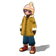
Strong Inspiration Man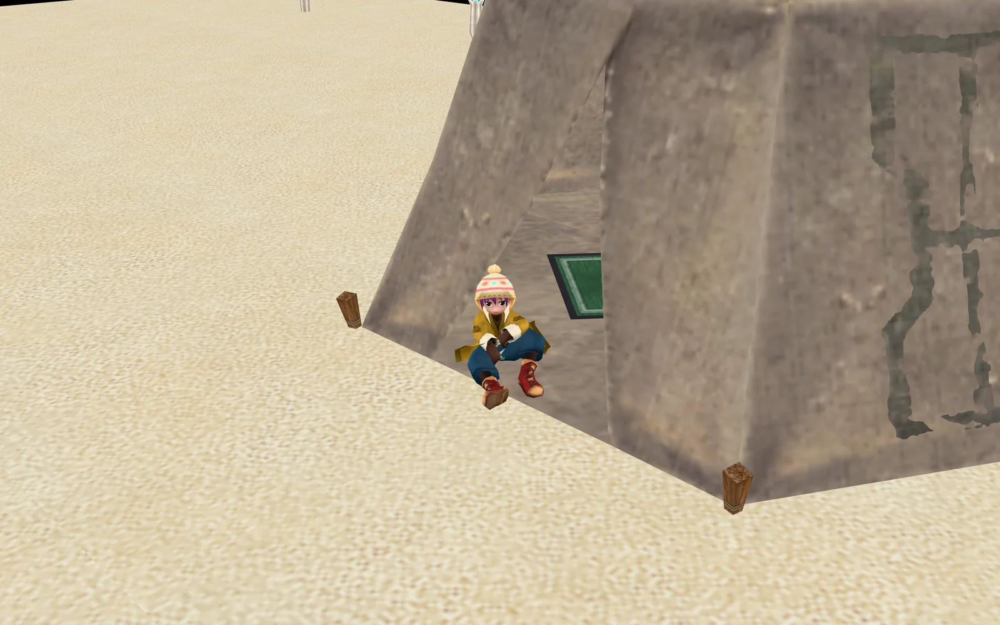
2. Collect the Fragments of Courage
- In Abyss of the Depth, enter the house at (134, 207). Read the book on the round table in the middle of the room. It costs 3 quest points and takes you into the book world.
- You go in alone. Your HP, MP and SP recover all the time, as in a town.
- Defeat the Unknown monsters there. They look like your own character. Each can drop a Fragment of Courage.
- Collect 100 × Fragment of Courage.
3. Defeat the Emil Dragon's human form
-
Bring the fragments to the Emil Dragon in Abyss of the Depth.
 Emil Dragon
Emil Dragon
-
He gives you the quest Strongest Dragon's End (Party): a party hunt with a 60-minute limit.
- Enter the dungeon behind him and defeat the Emil Dragon - Arma (Lv 250).
- Report back to the dragon. He takes the 100 fragments and gives you a
 Jewel of Hope.
Jewel of Hope.
4. Trade the Jewel of Hope
- Return to Strong Inspiration Man in Abyss of the Depth.
- Choose Male or Female, then Fighter, Spell User or Backpacker. He takes the Jewel of Hope and gives you the full set of one random job line from that group.
- Make room in your inventory first.
Rewards
The set is one of these.
Names with (M) are for men and (F) for women, but 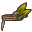 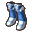 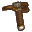 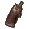 Sword Emperors Armor: Black Dragon (Bottom) and
Sword Emperors Armor: Black Dragon (Bottom) and  Farmer Emperors Rucksack and
Farmer Emperors Rucksack and  Explorer Emperors Helm are for both.
Explorer Emperors Helm are for both.
Fighters
Swordsman, Blade Master, Bounty Hunter
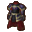
Sword Emperors Armor: Black Dragon (Top) (M)Fencer, Knight, Dark Stalker
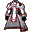
Fly Emperors Armor: Ares Plate (Top) (M)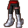
Fly Emperors Armor: Ares Plate (Bottom) (M)Scout, Assassin, Commando
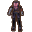
Shadow Emperors Clothes: Dark Panther (F)Archer, Striker, Gunner
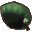
Bow Emperors Selene Kephalia (M)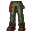
Bow Emperors Clothes: Selene Forums (Bottom) (M)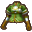
Bow Emperors Clothes: Hecate Bela (Top) (F)Spell Users
Wizard, Sorcerer, Sage
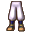
Evil Emperors Clothes: Athena Velo (Bottom) (M)Shaman, Elementalist, Enchanter
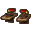
Fairy Emperors Wooden Clogs (M)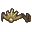
Fairy Emperors Crown (F)Fairy Emperors White Wings (F)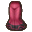
Fairy Emperors Clothes: Shiranui Kagura (Bottom) (F)Vates, Druid, Bard
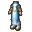
Holy Emperors Clothes: Seraph Font (F)Warlock, Cabalist, Necromancer
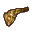
Chronos Eye (M)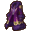
Dark Emperors Clothes: Chronos Ark (Top) (M)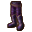
Dark Emperors Clothes: Chronos Ark (Bottom) (M)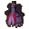
Dark Emperors Shoes: Chronos Agni (F)Backpackers
Miner (Tatarabe), Blacksmith, Engineer (Machinery)
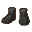
Blacksmith Emperors Shoes (M)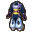
Blacksmith Emperors Clothes: Hephaistos Breath (F)Farmer, Alchemist, Marionettist
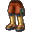
Farmer Emperors Clothes: Demeter Skin (Bottom) (M)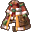
Farmer Emperors Shoes: Demeter Noct (F)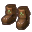
Farmer Emperors Shoes: Demeter Float (F)Ranger, Explorer, Treasure Hunter
Merchant, Trader, Gambler
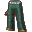
Trader Emperors Clothes: Mammon Chaos (Bottom) (M)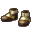
Trader Emperors Shoes: Mammon Mad (M)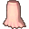
Trader Emperors Clothes: Mammon Veil (Bottom) (F)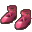
Trader Emperors Shoes: Mammon Soil (F)Trader Emperors Ribbon (F)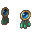
Trader Emperors Earrings (F)Good to know
- Losing the dragon fight doesn't cost the fragments. The dragon takes them only when he gives you the Jewel of Hope.
- The Fragment of Courage can't be traded.